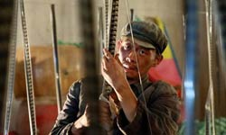
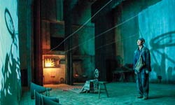
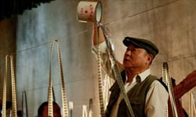
One Second is about a man who escapes from a farm-prison during the Cultural Revolution. It was selected to compete for the Golden Bear at the 69th Berlin International Film Festival, but was withdrawn shortly before the screening. The official explanation for the withdrawal was "technical difficulties encountered during post-production", but critics suspected politically motivated censorship. Many thought it was withheld from contention precisely because it was reputed to be so good that it might have taken home multiple awards, something the Chinese government would not want.
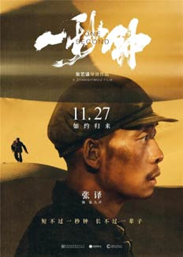
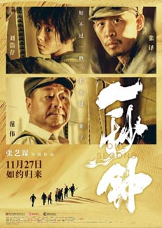
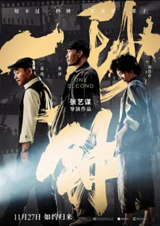
The film’s story centres on an escaped prisoner and young woman bound together by parallel pursuits of an enigmatic film reel, one of the countless propagandistic news reels that were transported across the countryside during that time for the entertainment and political edification of rural villagers. The man, recently escaped from a Cultural Revolution prison farm, has reason to believe the reel contains a glimpse - lasting just a single second - of his beloved, deceased daughter. The girl carries her own desperate motives stemming from personal loss and a hoped-for glimmer of redemption.
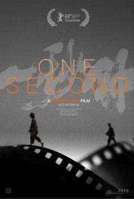
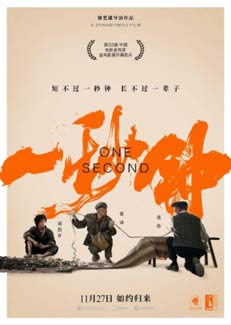
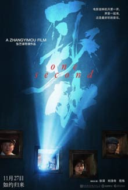
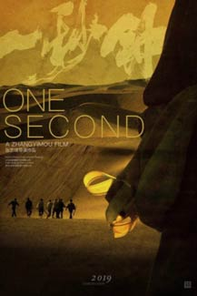
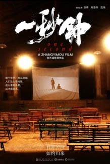
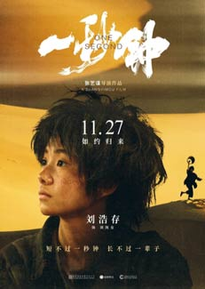
As Zhang signed-on to direct the official ceremonies surrounding the 70th anniversary celebrations of the founding of the People’s Republic of China in 2019, reaffirming his status as the government’s go-to creative hand, perhaps the Party was unwilling to ally itself to any political taint stemming from Zhang's perceived creative trespasses in One Second.
For Zhang, the episode may have carried the uncanny feeling of history repeating itself. During the early days of his career, the director’s pioneering period drama To Live won the Jury Prize at the 1994 Cannes Film Festival, only to get banned from theatrical release at home in China because of its perceived critique of government policy. Not until Zhang directed the stunning opening and closing ceremonies of the 2008 Beijing Olympics was he considered fully rehabilitated.
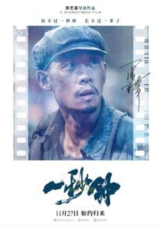
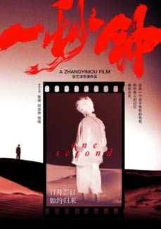
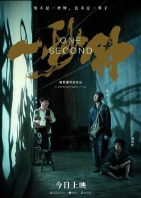